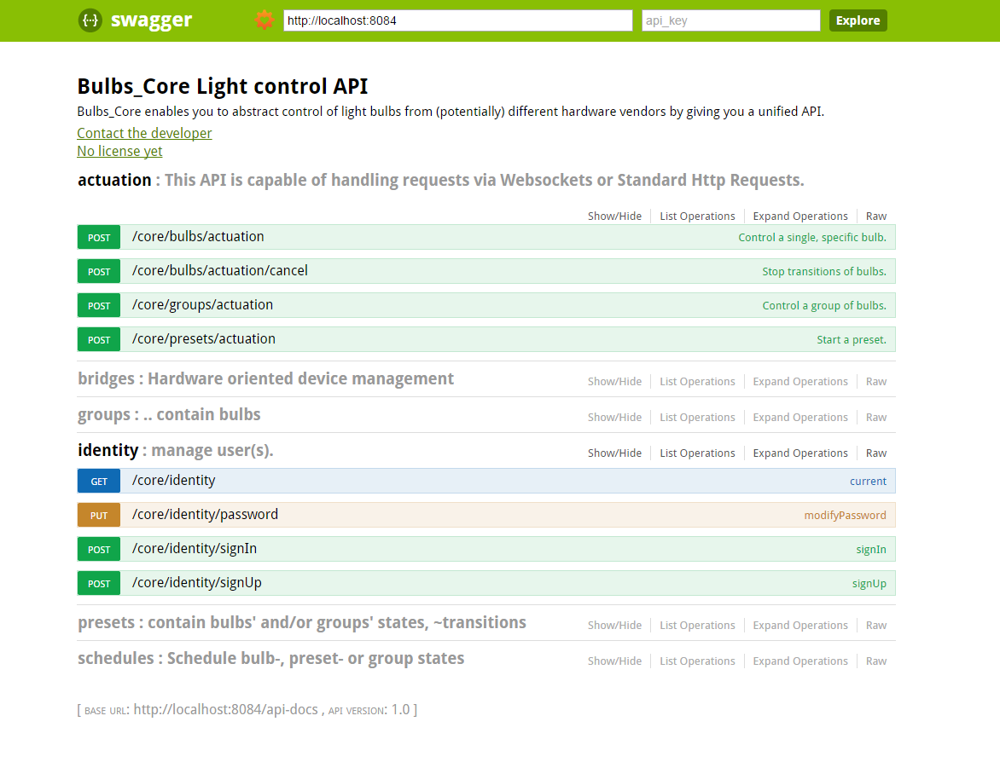
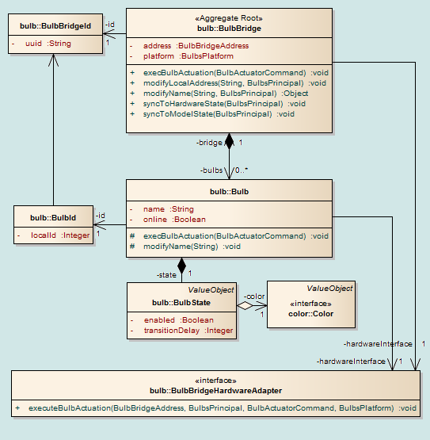

Thomas Wendzinski
Intended to be used by ..
End user: Client service developer
/core/**/actuation **⇒[bulbs | groups | presets]
/core/bridges/core/bulbs/core/groups/core/presets/core/schedules/core/identity
POST /core/bulbs/actuation/ HTTP/1.1
Host: 192.168.1.25
Auth: 689BB327-5BF3-4SEF-9837-54E45635AD973
{
"type": "BULB",
"bulbId": "2d2d33d2-32d23d-23d2-asdas3d2-3asdd2-3d23d23d2d",
"appId": "APP_TYPE__BULBS_CORE", // Sth. unique for priority coordination
"loop": false,
"states": [
{ "color": {
COLOR_SCHEME : "HSB" // alt. "RGB" | "TEMP" in future
hue : 360
saturation : 255
brightness : 125
},
"enabled": true
"transitionDelay": 0,
}// , { ... } further states
]
}
Auth : <Api-Key>
By signing in or up with credentials at endpoints
/core/identity/signIn or
/core/identity/signUp
you get necessary authentication info
{
"email": "birnenfan@meineBirnenfarm.de"
"password": "geheim"
}
{
"nickname": "Birnenmaster",
"apiKey": "123123asaAasdasd122asdas",
"email": "birnenfan@meineBirnenfarm.de"
}
Get an overview using the included Swagger UI
NOTE: Polimorphism doesn't seem to be supported well.
scheduler features availableDomain Driven Design
“Domain-driven design is not a technology or a methodology. It is a way of thinking and a set of priorities, aimed at accelerating software projects that have to deal with complicated domains.” by dddcommunity.org
From DDD Wiki article these priorities are:
A specimen of the (simplified) core domain model:
... from Github
and vagrant up
.. which will provide a virtual Linux Environment serving:
Run mvn clean install ...
... and finally start the app with its embedded Tomcat by running the Main class.
debugSpring-Loaded agent
compile-and-minify
developmentproduction)
productionSpring Security